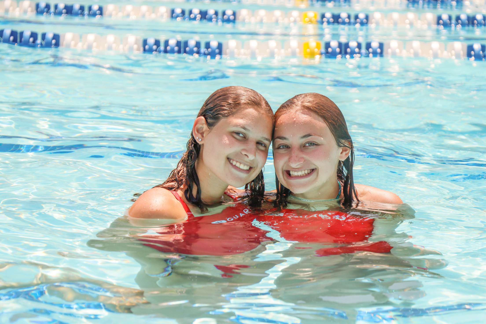

Hi, I'm Kaley Krivelow. I am from Stoughton, Massachusetts. I am a sophomore at Elon University as a Cinema and Television Arts major with a minor in entrepreneurship. In 2021, I graduated from West Bridgewater Middle-Senior High School. I am active in Hillel as the VP of Content Creation and a member of Alamance Club Gymnastics. During my free time, I like to cook, hang out with my friends, and listen to music.


I am the current vice president of content creation on the Elon Hillel executive board. I was an overnight camp counselor and lifeguard for 2 summers at Camp Tel Noar. During the pandemic, I worked as a hostess at La Familia Restaurant. I assistant coached gymnastics for 5 years, which is something I stay involved in and hope to officially return to in the future. I have experience in TV Production thanks to high school classes, an internship my senior year, and the opportunity to produce and direct my graduating class’s lip dub video. I am currently continuing my education in the field at Elon University in Elon, North Carolina.
I grew up in Stoughton, Massachusetts, just 40 minutes south of Boston. There is nothing I love more than spending time with my friends and family. I am a proud member of Alamance Club Gymnastics, a student-run competitive gymnastics team comprised of Elon Students. I have a passion for cooking, music, concert photography, travel, and video-making.